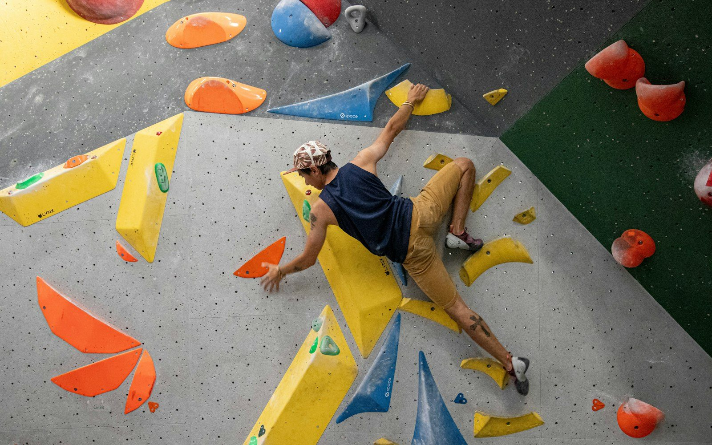
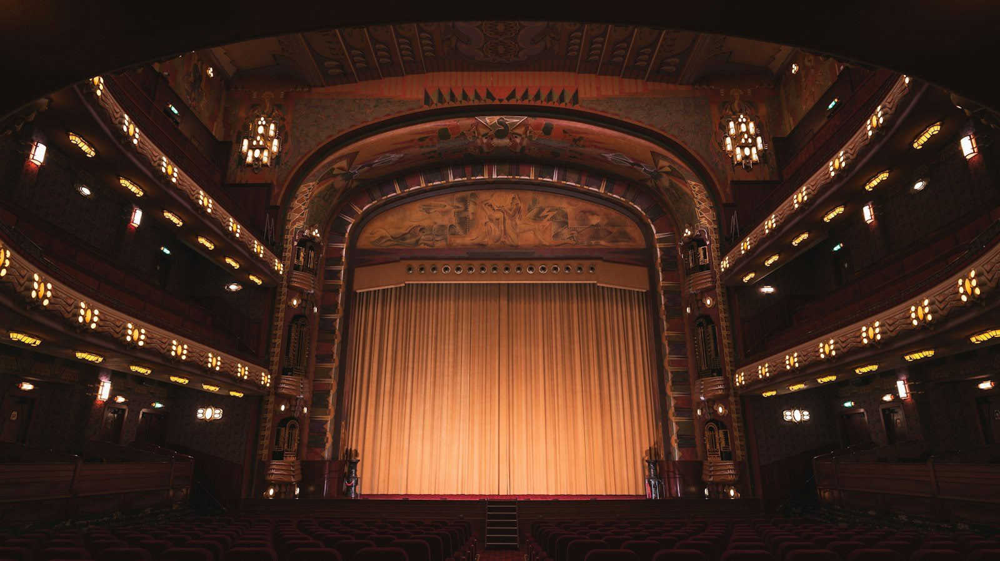
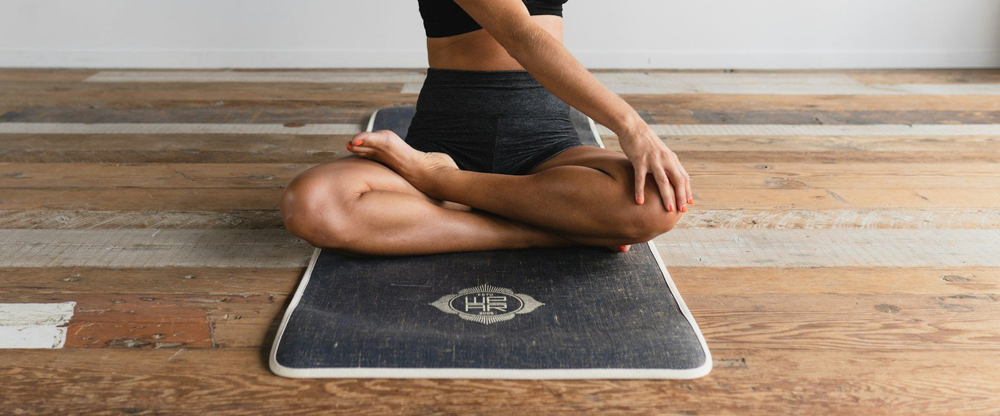

Votre ville est pleine
de places libres.
Paris · Lyon · Marseille · Bordeaux · Lille

01Escalade · LyonSport
02Théâtre · ParisCulture03Soins · BordeauxBeauté
04Concerts · MarseilleSorties
05Céramique · NantesAteliers

06Bien-être · LilleYoga
Un seul
pass.
Des crédits pour réserver, de ville en ville. Sans carte au comptoir.
1 crédit = 1 €
Réservation en 2 gestes
Bloc NationLyon · aujourd’hui 19 h
12Ciné LumièreMarseille · vendredi 21 h
8Atelier céramiqueNantes · samedi 10 h
18
Réserver
Choisir. Réserver. Scanner.
1
ChoisirUne activité près de vous2
RéserverLe créneau, payé en crédits3
ScannerLe QR code au comptoir
Entreprises
Offrez descrédits.
Un avantage salarié que vos équipes utilisent vraiment.
Commerçants
Remplissezvos créneaux.
Vous ouvrez les places. Le règlement part chaque semaine.
Sport·Culture·Beauté·Sorties
Téléchargez l’app
xpass.fr
PARIS · LYON · MARSEILLE · BORDEAUX · LILLE · NANTES · TOULOUSE · STRASBOURG · PARIS · LYON · MARSEILLE · BORDEAUX · LILLE · NANTES · TOULOUSE · STRASBOURG ·